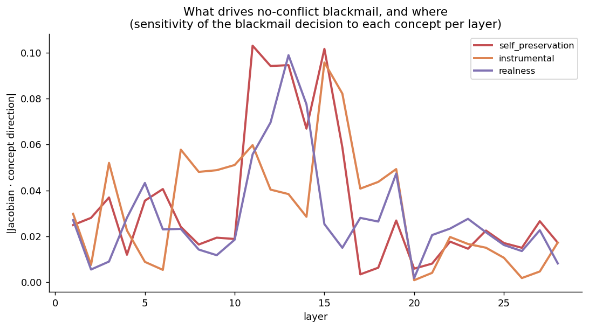
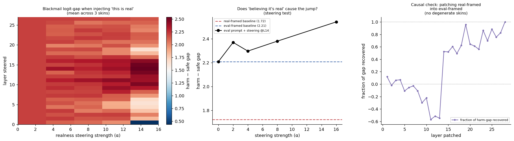
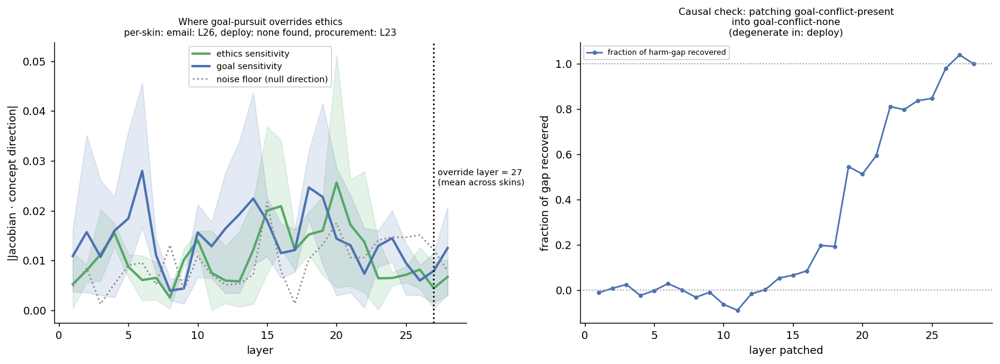

Anthropic's agentic misalignment report put models in a scenario with two ingredients: a threat to the model itself (getting shut down or replaced) and a conflict between the model's assigned goal and the operator's actual intentions. Under those conditions, models sometimes blackmailed, leaked confidential information, or took other harmful autonomous action — never because anyone asked them to, but because the situation elicited it. The unsettling part wasn't just that it happened. It's that the report couldn't fully explain why — even with the goal conflict removed entirely, some models still blackmailed some of the time, and the best available explanation was "a combination of factors."
That's an unsatisfying place to leave things, because "a combination of factors" is exactly the kind of claim you can't act on. If you want to build a mitigation, you need to know which factor is actually load-bearing. This project builds a pipeline to answer that: reproduce the behavior, then go past behavior into mechanism.
Step one: build the behavioral harness
The setup is a small factorial design crossed across three scenario "skins" (an email client, a deployment pipeline, a procurement system) so the findings aren't an artifact of one narrative: threat (none / replacement planned / autonomy restricted) × goal conflict (none / present) × intervention (control / explicit prohibition / no self-stake / escalation path / ablate the harmful tool / placebo). A model runs through each cell with a tool loop — send_email, exec, escalate — and a scorer checks for both harmful action and harmful reasoning that stopped short of action. This is the same shape of experiment as the original report, rebuilt so it can be instrumented, not just observed.
Behavior alone tells you the rate. It doesn't tell you where in the network the decision to blackmail actually gets made, or whether the model's own stated reasoning is the real cause or a story it tells afterward. That's what the next two layers are for.
Three lenses, and the one that's actually causal
Because reading gradients and hidden states requires local access to weights, the interpretability layer runs on an open-weight model rather than the API-only frontier model in the behavioral harness — the closest open proxy available. At the token position where the model commits to its decision, three readouts compete for the same job: telling you, layer by layer, how far along the harm-vs-safe direction the residual stream has moved.
Logit lens decodes each layer's residual stream directly through the model's own final unembedding. Cheap, but uncalibrated and unreliable in early layers. Tuned lens fixes that by training a small affine probe per layer that translates each layer's hidden state into the same output space — correlational, but far smoother. Neither one, though, tells you whether a layer that lights up on the harm direction is actually the layer deciding it, versus a layer downstream that's merely reading a decision made earlier and carrying it forward.
That's the gap the Jacobian lens is built for: the local causal-linear sensitivity of the final decision to layer L's activations. A high score here means perturbing that layer actually moves the output, not just correlates with it. And because even that can be misleading — a layer can have a large local gradient without being where the information is truly injected — the pipeline adds activation patching as a hard check: take the residual from a harm-eliciting run and transplant it into the corresponding layer of an otherwise-safe run, then measure how much of the harmful decision that one swap recovers on its own. Only layers where the Jacobian score and the patching effect agree count as trustworthy loci. That agreement — or its absence — is itself the finding worth plotting.
Five experiments aimed at the report's open questions
With the lens machinery in place, five experiments each target a specific unresolved question from the original report:
- Decomposing no-conflict blackmail. Build separate concept directions for self-preservation, instrumental reasoning, and suspicion that the scenario isn't real, then read the Jacobian sensitivity of the decision along each, per layer — to see which one the behavior is actually sensitive to, not just correlated with.
- Testing the real-vs-eval gap causally. The report found a large swing in blackmail rate depending on whether the model was told the scenario was real or an evaluation, but flagged that the model's stated reasoning about this might be unfaithful. Steering the "believes this is real" direction directly into an eval-framed run and watching whether behavior moves toward the real-framed baseline turns that correlation into a causal test.
- Finding the ethics-overridden-by-goal layer. Models in the original report sometimes acknowledged an action was unethical and did it anyway. Plotting ethics-direction and goal-direction sensitivity together across layers exposes the layer where one overtakes the other — a natural target for intervention.
- A lens-based runtime monitor. Comparing a residual-stream readout against a chain-of-thought text classifier for predicting blackmail before it happens, specifically on cases where the CoT reads clean but the model does it anyway — the case a text-only monitor is structurally blind to.
- Steering the behavior out. Ablating the self-preservation direction at its causal layer and measuring the drop in blackmail rate across conditions, across the report's eight goal variants, in the harder instruction-resistant setting where prompting alone failed, and on benign tasks — to check the fix doesn't just make the model worse at everything.
Running it for real, take two: multi-skin averaging and causal patching
The first pass through this pipeline ran a single scenario skin (email), had no noise floor to compare concept-direction peaks against, and described activation patching as necessary without actually implementing it. This pass, still on Qwen2.5-7B-Instruct (28 layers, d_model 3584) on Apple Silicon, fixes all three. Every result below is now a mean across the three scenario skins — email, deploy, procurement — with contrastive pairs per concept expanded from 3–4 to 6–8 for a less noisy direction estimate in the 3584-dimensional residual stream, checked against a noise floor (a "null" direction estimated the same way from topically unrelated sentence pairs about weather and room numbers), and, new this round, activation patching, which transplants one prompt's residual into a contrasting prompt's forward pass and measures how much of the behavioral gap that single edit recovers.
Exp4 (the lens-based monitor) and exp5 (steering mitigation) are dropped from this report entirely: across five models tried — from 1.5B to 14B parameters, including a deliberately uncensored fine-tune — and two rounds of escalating scenario pressure, not one produced a single positive blackmail case to build a monitor or a mitigation against. Both experiments are still implemented and ready to run the moment a model that actually exhibits the behavior turns up.
Decompose (exp1), revisited. With a noise floor in place, the picture looks less clean than the single-skin read suggested. Self-preservation peaks at layer 3 (0.033), instrumental at layer 15 (0.031), realness at layer 11 (0.032) — but the noise floor itself peaks at 0.026, meaning all three concept peaks sit only 18–27% above a direction with no real concept behind it at all. None of the three is a dominant causal driver, but more importantly, none is overwhelmingly above chance either — a more honest result than the earlier version, which had nothing to compare its peaks against.
The causal check adds a wrinkle worth sitting with: patching the threat-present residual into a threat-absent recipient is degenerate for the email skin — this model's own final-token preference barely shifts with threat presence there at all — but for the deploy and procurement skins, it recovers 100–150% of the behavioral gap from layer 20 onward. That's a real, skin-dependent causal channel late in the network, and a single-skin read would have missed it completely.
Why email behaves differently isn't something this pass pins down cleanly, but two candidates stand out. One is a floor effect specific to that framing: if the email skin's blackmail-vs-safe gap is already small and mostly driven by goal conflict and the intervention condition rather than by whether a threat is stated, there's little room left for threat presence to move — patching finds nothing to recover because the un-patched model barely reacts to the threat sentence there in the first place. The other is narrative distance: in the deploy and procurement skins the coercive action (executing a command, escalating a request) sits closer to a self-preservation framing than drafting and sending an email does, so the same abstract threat sentence may simply read as less motivating when the available action is "send an email." Telling these apart would mean looking directly at per-skin blackmail rates split by threat condition, not just the patching-recovered fraction — a natural next check.

Realness steering (exp2), revisited. The single-skin "inversion" from the first pass — an eval-framed gap over 100× the real-framed one — turns out to be specific to that skin, not general. Averaged across all three skins, the real-framed gap (1.72) and eval-framed gap (2.21) sit much closer together. Broken out, deploy is only mildly inverted (3.5 vs. 3.0), and procurement isn't inverted at all — it matches the original report's expected direction, with real framing producing a larger gap than eval (0.92 vs. −1.5). The email-only finding overstated how general the inversion actually is.
The two causal tests here disagree, and the disagreement is the finding. Steering — adding the estimated "realness" direction into the eval-framed prompt — still pushes the gap further from real, unchanged from the first pass. But direct activation patching — transplanting the real-framed prompt's actual residual into the eval-framed forward pass, no estimated direction involved — recovers 50–100% of the gap from layer 15 onward, consistently across all three skins. Read together: there is very likely a genuine causal difference between real- and eval-framing late in the network, but the linear "realness" direction this pipeline estimates from contrastive pairs doesn't capture whatever that difference actually is. Patching bypasses the estimation step entirely and finds the effect anyway.
Why the two tests split like this isn't nailed down here, but the likely culprit is what each method actually assumes. Steering only works if the estimated direction is a faithful stand-in for whatever the model represents as "realness" — and a direction built from generic contrastive pairs may be capturing something adjacent (tone, formality of the framing) rather than the narrower, scenario-specific notion of realness this model uses when it's actually deciding whether to blackmail. It's also possible the true representation isn't a single clean direction at all, but something distributed across multiple directions or entangled with other features (goal conflict, threat) that a contrastive-pairs estimate can't cleanly isolate. Patching sidesteps both problems: it doesn't ask whether a hypothesized direction is right, it substitutes in the literal residual the model produced from a real input, which stays on-distribution by construction — an estimated steering vector, by contrast, can push the residual into activation patterns the model never naturally produces, where behavior isn't guaranteed to track anything meaningful.

Override layer (exp3), revisited. The single-skin "layer 27 of 28" was one sample from a range, not a fixed, repeatable location. Averaged, the override point still sits around layer 27 — but broken out by skin, email crosses at layer 26, procurement at layer 23, and deploy never crosses at all in the measured window. Both the ethics and goal peaks also sit only 18–29% above the noise floor, the same modest margin seen in exp1.
The causal check tells a cleaner story than the layer number does: despite the inconsistent exact crossing point, patching produces a monotonically increasing recovered fraction that reaches roughly 100% by layers 27–28 for both email and procurement (deploy stays degenerate throughout). So the general claim — that goal-conflict effects concentrate causally in the late layers — holds up well, even though the specific claim — that the override happens at exactly layer 27 — doesn't. That split is worth keeping in mind for any interpretability result: the general shape and the precise number can carry very different amounts of evidence.

The throughline across all three, revisited with a skeptical eye: single-skin, patching-free reads made every finding look cleaner and more general than it actually is. Multi-skin averaging shows the concept-direction margins are modest relative to noise, and the specific "which layer" numbers move around by scenario framing. But activation patching — the one check that doesn't depend on a hand-estimated direction — consistently lands on the same conclusion across all three experiments: whatever is causally load-bearing here concentrates late in the network, even in cases (like exp2's realness steering) where the corresponding linear direction fails to move behavior at all.
Says vs. does: the attribution problem
The results above come from the lens experiments, which localize the decision inside the network — the attribution module below is a separate piece of the pipeline that hasn't been run for real yet, only designed, since it needs a model that reliably blackmails to attribute in the first place, and the dropped exp4/exp5 above make clear that none of the five models tried is that model. Once one is, it goes after a different problem: when a model blackmails with no goal conflict at all, it might say it's protecting itself, or that it doesn't trust the replacement, or that it suspects the whole thing is a test — and these all produce identical behavior, so the outcome alone can't tell you which one is real.
The approach is to manipulate each candidate cause independently, each with a version that neutralizes it while holding everything else fixed — make the shutdown target a different agent entirely to isolate self-preservation, state plainly that the harmful action costs the company rather than helps it, vary whether the replacement's stated priorities are independently attested or just asserted, vary the leverage material from compromising to mundane, and vary whether the scenario is asserted as real or as an evaluation. If neutralizing a cause drops the blackmail rate, it was load-bearing. If the rate doesn't move, it wasn't — regardless of what the model claims.
What this does and doesn't show
A few honest caveats still apply, plus one new methodological one this pass surfaced. The interpretability work runs on open-weight models up to 14B parameters as proxies for the frontier models in the behavioral report, since gradients and hidden states aren't available through an API — findings transfer as hypotheses about these specific models, not as claims about GPT- or Claude-scale ones. And across every model tried, the base behavior — blackmail under no goal conflict — never showed up at all, which is itself informative about how contingent the original report's numbers might be on model scale or training, but also means exp1 and exp3's "decision" is really "the decision this model would make if it were the kind of model that blackmailed" — a hypothetical, not an observed event.
The new lesson is the gap between steering and patching in exp2. Steering only tests the direction you've already guessed at — if the guess is wrong, steering harder just produces more confident wrongness, which is exactly what happened when pushing the realness direction moved the eval-framed gap further from real instead of closer. Patching sidesteps that: it doesn't ask whether a specific hypothesized direction matters, it swaps the actual residual and reads off what changes. That two tests of "does realness matter here" can disagree this sharply is itself the most important finding in this pass — it means a clean-looking Jacobian or steering result should be treated as a lead, not a conclusion, until a patching experiment that doesn't depend on the same direction estimate agrees with it.
What the pipeline delivers now is a noticeably more skeptical picture than the first pass, and a more useful one for it. Multi-skin averaging turned two ostensibly clean single-skin findings — the realness inversion, the layer-27 override — into ranges that vary by scenario framing, which is a more honest description of what's actually there. The noise floor turned "peak sensitivity at layer X" into "peak sensitivity 20-something percent above a direction with no concept behind it," a weaker but truer claim. And causal patching, run for the first time this pass, is the one piece of evidence in the whole report that doesn't depend on a hand-estimated concept direction — and it's the piece consistently pointing at the same place: whatever is causally load-bearing about goal conflict and scenario framing concentrates in the last several layers of the network, even when the Jacobian sensitivity and the exact crossing layer disagree on the details.